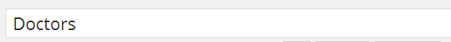
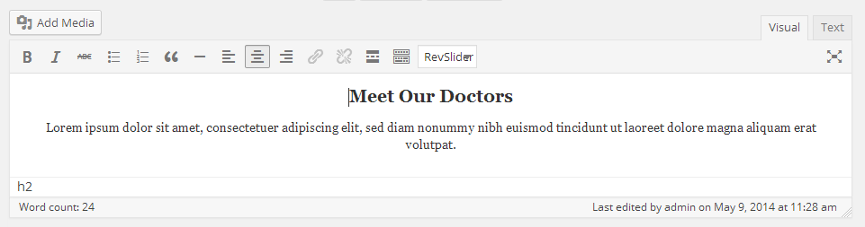

Go to Dashboard » Pages » Add New
-
Provide the page title 
-
Select the appropriate page template for doctors. There are 3 templates for doctors page.
- Doctors 2 Columns Template
- Doctors 3 Columns Template
- Doctors 4 Columns Template

-
Enter some text contents if you want to. 
-
Publish the page once it is ready.
-
After publishing, you need to add the newly created page in menu from Dashboard » Appearance » Menus